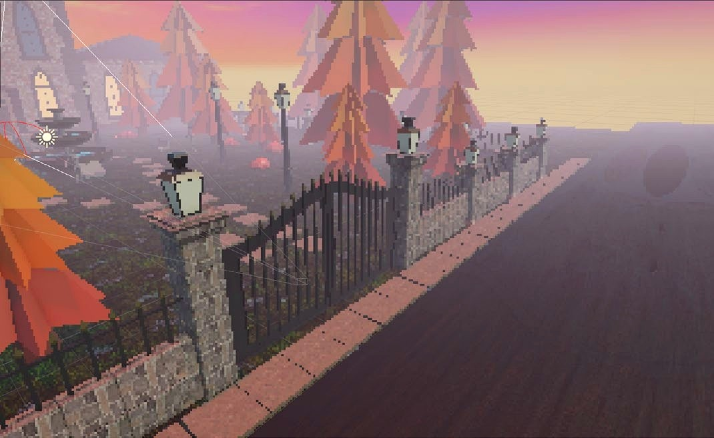
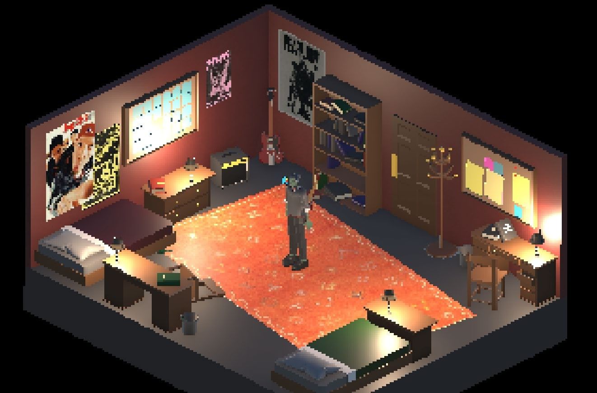
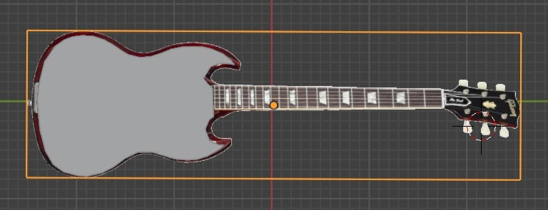
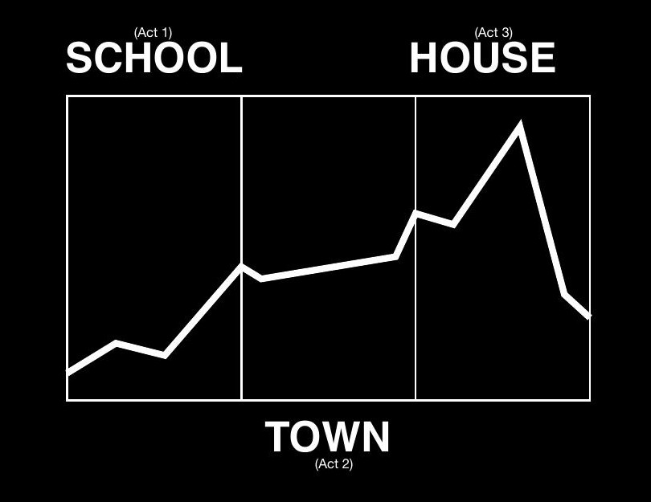
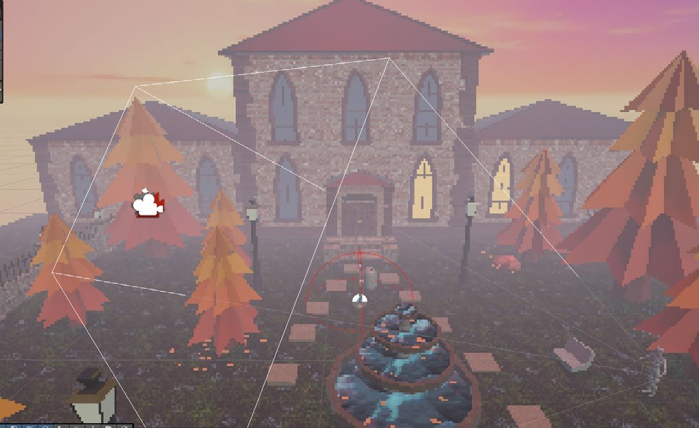
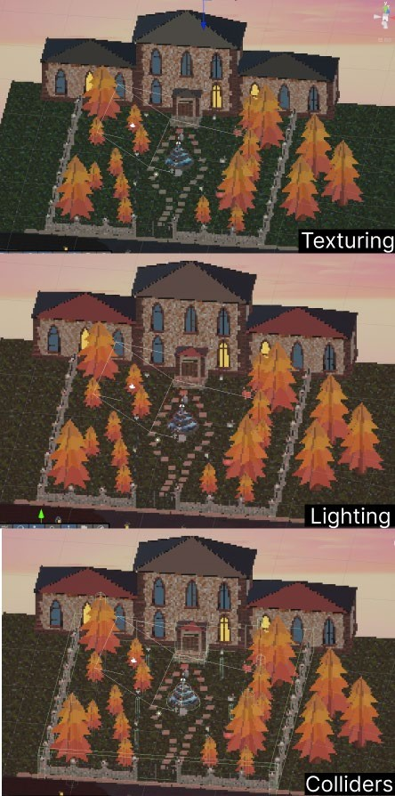
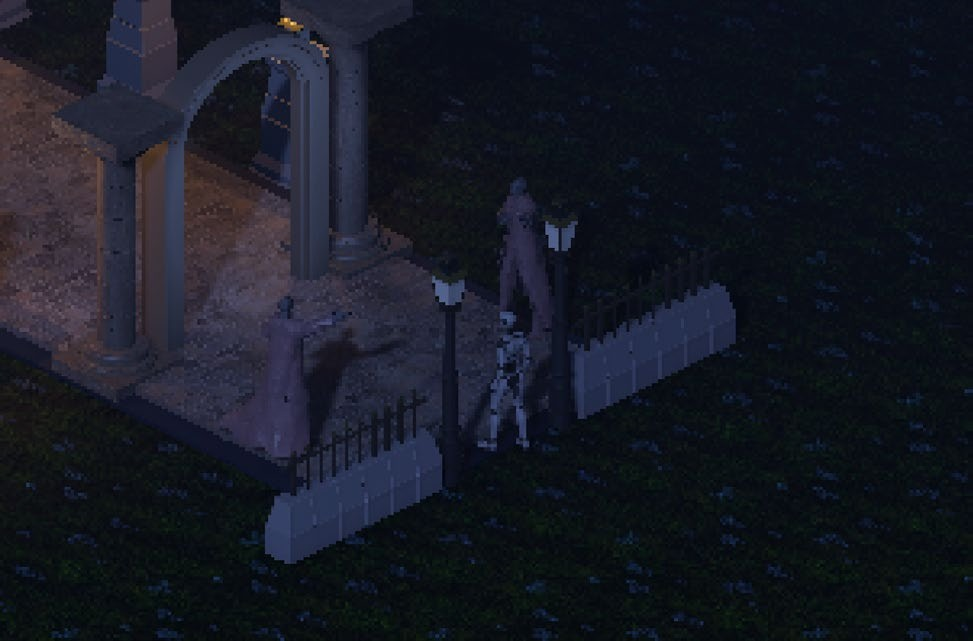
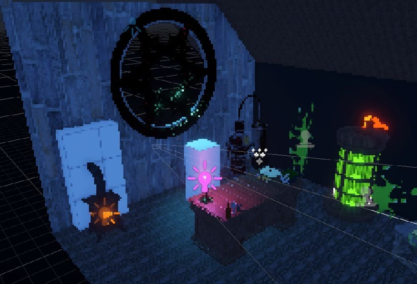
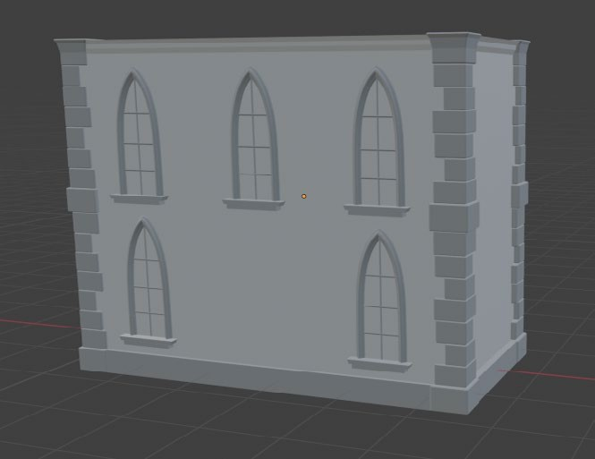

Game design · Team of three · Unity, Blender
FrankenTeen
FrankenTeen retells Frankenstein as teenage rebellion. Adam leaves boarding school to confront the man who made him, and a guitar is the only input the game ever asks for: exploration, dialogue, music, confrontation.
FrankenTeen was made by a team of three. I designed and built Act 3 end to end, the mansion approach and the attic confrontation, working in Blender and Unity to handle the environment, triggers, dialogue, and interaction that carry the ending.

The shared concept


We reinterpreted Frankenstein as a coming-of-age story instead of a horror one. The Creature becomes Adam, and the guitar he carries everywhere is both his identity and the game's only mechanic.
The world blends gothic architecture, tall arches, heavy stone, with Adam's punk identity disrupting it through posture, attitude, and that guitar. We kept the visuals low poly and let mood come from lighting and shadow instead of surface detail. The core interaction is a single input that context-switches between talking to NPCs, playing music, and, in confrontational moments, an expressive combat action. One button carrying that much weight meant the guitar had to read as identity and tool at once, never just a prop.
Most of the code is self-written. A couple of methods were borrowed and modified from an earlier project, and I used AI assistance to fix a persistent collider bug during Act 3 development.
Designing Act 3 and its pacing
Level design follows emotional pacing, not environmental scale. Each act had to intensify, and Act 3 needed to land as the highest point, not just the last location on the map.
I built the mansion approach and attic against that same curve: wide, open grounds outside give the player room to breathe after two acts of confinement, then the attic takes that room away again for the confrontation. Layouts stay readable from the fixed isometric camera through sightlines and object placement rather than signage, the same discipline the whole team used, just carried further here.

Building the mansion approach
By Act 3, Adam has spent two acts being restricted. I wanted the approach to feel like that pressure finally breaking open, before I take the room away again in the attic.


I built the mansion from the team's modular kit, wall sections, roof pieces, door frames, so I could iterate on its silhouette without remodelling every time the layout changed. The gate, fountain, and tree-lined path are pacing beats, not decoration: trigger volumes keep movement controlled right up to the door, the same logic as the level design, scaled to a full act.
Designing the attic confrontation
The mansion's exterior is open. The attic does the opposite on purpose: once Adam is through the gate, the space narrows again for the confrontation with Victor.


The confrontation happens somewhere improvised and abandoned, not grand, which is the spatial argument for why this is the climax and not just the last room in the game. Dialogue triggers, progression gates, and the breakable-object interactions that carry into this room were mine to set up. Lighting stays sparse on purpose, so the guitar's confrontation input reads as the brightest thing in the scene when it fires.
Blender, environment, and implementation
Everything in Act 3 traces back to two decisions: build modular, and let one system handle every interaction.
I built the mansion from the team's kit of reusable wall, roof, and door pieces rather than one bespoke model. Slower to set up, but it meant I could change the layout without remodelling. Interaction runs the same way: trigger zones and tagged identifiers instead of hard-coded logic per object, so a central script listens for the guitar input and fires the right event depending on what's nearby. That's what let one button cover talking, playing music, and combat without a pile of special cases, and it's the same system behind the demo level we built to test the mechanic before wiring it into the full Act 3 sequence.

Recorded from the Unity editor during Act 3 development: the trigger and dialogue system above, plus the mansion approach and attic confrontation, running as one playable sequence.
Testing, limitations, and what I'd change
We built a short demo level around the guitar mechanic and watched people play it without much explanation, on purpose: anything the level itself couldn't teach was a design gap, not a briefing gap.
The UI direction shifted toward 90s zine culture after early feedback, fully designed but never wired into the shipped build given our time. That's a real limitation, not something I'm glossing over. The more personal Act 3 got, the more responsibility I felt to get it right: fix the gate glitch, make key bindings clearer, get NPCs reading as speakable at a glance. The systems are in the right shape. What's left is making them feel as intentional as the concept already is.